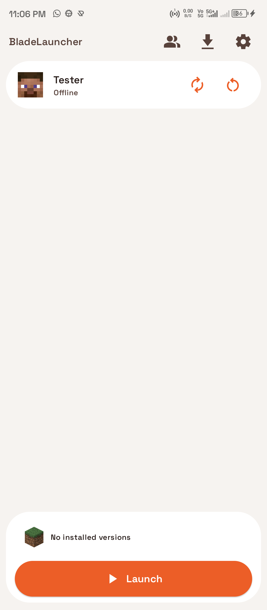
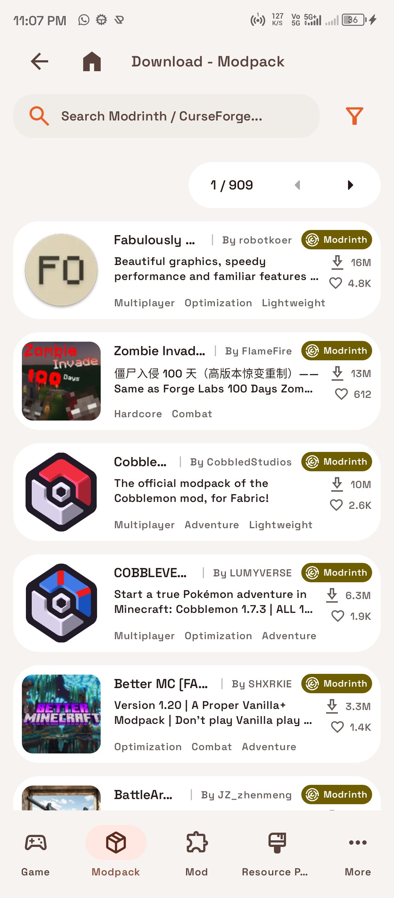
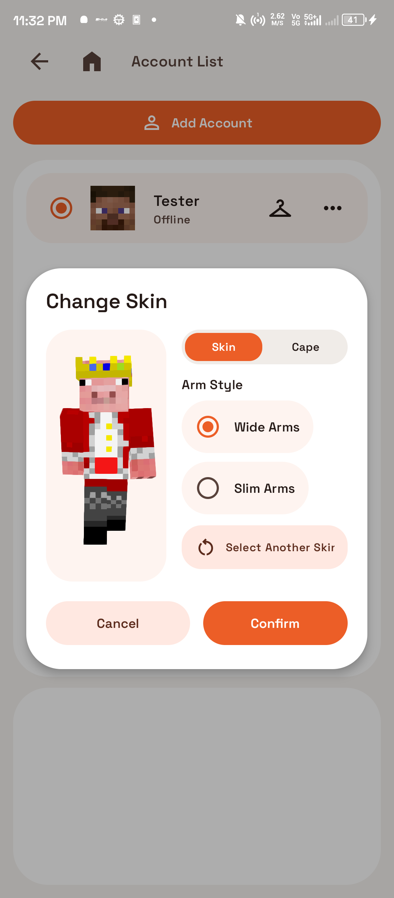
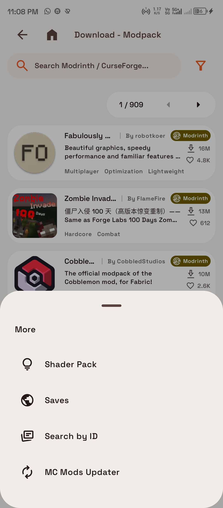
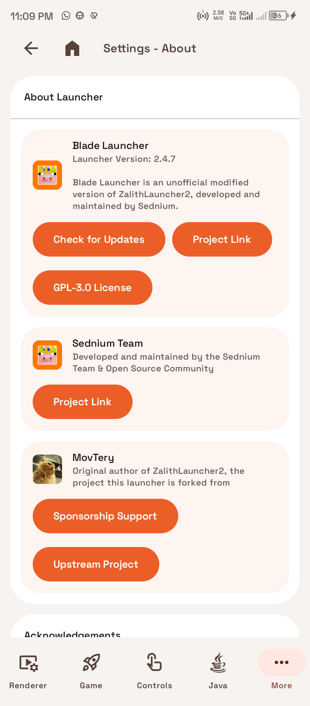
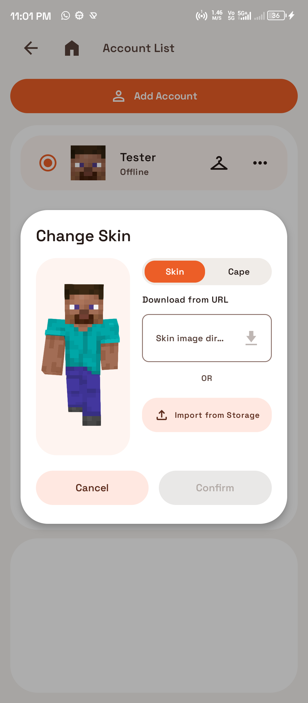

Open Source Android Launcher
Minecraft: Java Edition on Android.
Play Minecraft Java Edition (1.7.2 through 1.21+) on phones and tablets. Compatible with Fabric, Forge, NeoForge, and Quilt. Features a portrait-first interface, on-demand OpenJDK 8 through 26 runtimes, Vulkan Zink & GL4ES graphics drivers, and customizable on-screen touch controls.
GPLv3 Open Source
Android 8.0 to 15+
Zero Ads or Trackers

Production Release • v2.4.7
5
Java Runtimes
(JDK 8, 11, 17, 21, 26)
(JDK 8, 11, 17, 21, 26)
3
GPU Drivers
(GL4ES, Zink, VirGL)
(GL4ES, Zink, VirGL)
100
% Open Source
GPLv3 Licensed
GPLv3 Licensed
0
Ads or Trackers
Privacy-First Design
Privacy-First Design
App Tour
In-App Screenshots
Original interface captures showing the launcher dashboard, modpack browser, 3D skin wardrobe, and settings.





Core Features
Built for Mobile Gameplay
Full desktop Java Edition features brought directly to Android with an ergonomic portrait interface.
01 / DUAL ACCOUNTS
Microsoft & Offline Accounts
Sign in with your official Microsoft account for Realms, Hypixel, and public servers, or create local offline nickname profiles for singleplayer and LAN worlds.
02 / WARDROBE
Custom Skins & 3D Wardrobe
Import custom skins and capes via direct image URLs or local files with built-in format validation, Steve/Alex arm models, and 128×128 HD texture support.
03 / PERFORMANCE
Automatic GPU Driver Detection
Inspects device OpenGL ES and Vulkan driver capabilities on startup, recommending the most stable renderer — GL4ES 1.1.6, Vulkan Zink, or VirGL — without silent overrides.
04 / RUNTIMES
Isolated OpenJDK Runtimes (8–26)
Downloads verified OpenJDK runtimes (Java 8, 11, 17, 21, and 26) directly to isolated directories per game version, keeping the base APK compact.
05 / MODDING
CurseForge & Modrinth Browser
Search, install, and batch-update Forge, Fabric, Quilt, and NeoForge modpacks directly inside the launcher with automatic dependency resolution.
06 / CONTROLS
Custom Touch Controls & Gamepad
Configure draggable on-screen buttons, custom gestures, mouse cursor emulation, and gyroscope aiming, or connect Bluetooth controllers (Xbox, DualShock, Switch).
Compatibility Tool
Runtime & Renderer Matcher
Select your target Minecraft version to see how Blade Launcher configures isolated Java runtimes and graphics drivers.
Minecraft 1.21.4 (Tricky Trials / Modern)
Recommended Java Runtime
Java 21 JRE
Optimal GPU Renderer
GL4ES (Default) / Vulkan Zink
Minecraft 1.20.5+ strictly mandates Java 21+. On Adreno and modern ARM devices, GL4ES offers the best stability, while devices with full Vulkan 1.2 can leverage Zink for peak frame rates.
Hardware Specifications
System Requirements
Ensure your Android smartphone or tablet meets the hardware specifications for smooth gameplay.
Scroll horizontally to view specifications →
| Component | Minimum Requirement | Recommended Specification |
|---|---|---|
| Operating System | Android 8.0 (Oreo / API 26) | Android 10 or newer |
| CPU Architecture | 64-bit ARM (ARM64-v8a) or x86_64 | Octa-Core ARM Cortex (Snapdragon 7/8 series or Dimensity 8000+) |
| System Memory (RAM) | 3 GB RAM (Vanilla Minecraft 1.16+) | 6 GB to 8 GB+ RAM (Fabric/Forge modpacks with Sodium/Iris) |
| Graphics Hardware | OpenGL ES 3.0 support | Vulkan 1.2+ capable GPU |
| Free Storage Space | 1.5 GB free device storage | 5 GB+ high-speed UFS storage (for game assets and modpacks) |
Technical Comparison
Why Choose Blade Launcher?
Comparing Blade Launcher to traditional Android Java wrappers.
Scroll horizontally to view full table →
| Feature | Blade Launcher | Traditional Launchers |
|---|---|---|
| Portrait Mobile Navigation | One-Handed Bottom Bar | Forced landscape only |
| Isolated OpenJDK 8 to 26 | On-Demand Isolated JREs | Fixed single runtime bundle |
| Dual Account Support | Microsoft OAuth2 + Offline Profiles | Supported |
| Skin & Cape Wardrobe | 3D Preview, Mojang URL, 128x128 HD | Basic 64x64 only or manual file swaps |
| GPU Driver Recommendation | GL4ES, Vulkan Zink, VirGL Check | Manual trial and error |
| In-App Modpack Browser | CurseForge & Modrinth Auto-Install | Manual zip downloads and extraction |
| Privacy & Open Source | 100% GPLv3, Zero Trackers | Open source |
Common Questions
Frequently Asked Questions
Direct answers to common questions about running Minecraft Java Edition on Android.
Can I play on multiplayer Minecraft Java servers with Blade Launcher?
Yes. You can connect to online Java Edition servers, Realms, and local LAN worlds. To join servers requiring online verification (such as Hypixel or public vanilla servers), sign in with an official Microsoft account that owns Minecraft Java Edition. For local LAN play and offline-mode servers, you can create offline local profiles with custom nicknames.
Which Minecraft versions and mod loaders are supported?
Blade Launcher supports all Minecraft Java releases from version 1.7.2 through the latest 1.21.4 (and modern 26.2+ snapshots). Built-in mod loader support includes Fabric, Forge, NeoForge, and Quilt with automatic dependency resolution and in-app modpack downloads.
How do isolated Java runtimes work (OpenJDK 8 through 26)?
Different Minecraft versions require specific Java runtimes: Minecraft 1.12.2 and 1.16.5 run on Java 8/11, Minecraft 1.17 to 1.20.4 requires Java 17, and 1.20.5+ strictly mandates Java 21+. Blade Launcher downloads official OpenJDK binaries on demand into isolated sandboxes per version, ensuring version stability without bloating the initial APK file.
How do I import custom skins and animated capes?
You can import skins from local device storage or by pasting direct texture URLs (including official Mojang CDN links). The launcher supports classic 64×32 skins, standard 64×64 skins, and high-definition 128×128 or 256×256 skins with Steve (wide) and Alex (slim) 3D arm previews before applying.
Which GPU renderer should I choose: GL4ES, Vulkan Zink, or VirGL?
GL4ES 1.1.6 is the default OpenGL-to-OpenGL-ES translator and provides optimal stability on Qualcomm Adreno and ARM Mali GPUs. Vulkan Zink renders desktop OpenGL directly over Vulkan 1.2 drivers for modern hardware and is required for Minecraft 26.2+. VirGL is available for specialized virtualized GPU setups. The launcher inspects your GPU drivers on startup and suggests the most reliable driver.
Why is Blade Launcher distributed on GitHub instead of Google Play?
Running Minecraft Java Edition on Android requires downloading and executing external OpenJDK binaries and game bytecode (.jar and .so files). Google Play Developer policies strictly prohibit apps from executing downloaded code outside the APK (Dynamic Code Execution policy). In addition, Mojang third-party guidelines restrict launchers on commercial app stores. GitHub Releases is the official, uncompromised distribution channel.
Official Release
Download Blade Launcher for Android
Download the official production release APK and start playing singleplayer, modded servers, or LAN worlds on your device.
v2.4.7 (Official Release)
Download Blade Launcher APK
Supports ARM64, ARMv7, x86, x86_64 • 292 MB
Requires Android 8.0 (API 26) or later
SHA-256: bd55eed2230a227a8f1ad8b7b62506ed10d6281136a1e71ea8e5accbd35b1a97
Requires Android 8.0 (API 26) or later
SHA-256: bd55eed2230a227a8f1ad8b7b62506ed10d6281136a1e71ea8e5accbd35b1a97